Gallery
If you have a good loking JRobin graph and you want to contribute to this gallery, please send the graph to us with a few words of explanation. We'll be happy to put it here (your name won't be forgotten).
Here are some graphs created with JRobin (just to spice your appetite a little):


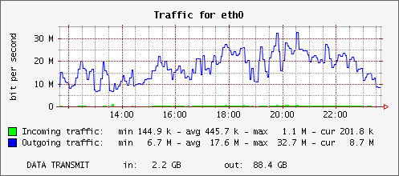

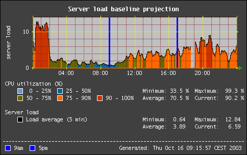
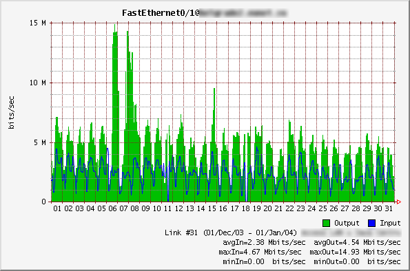
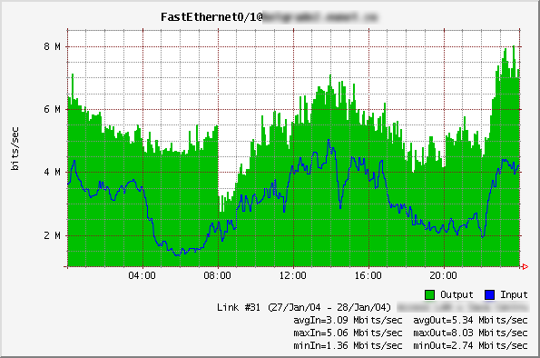
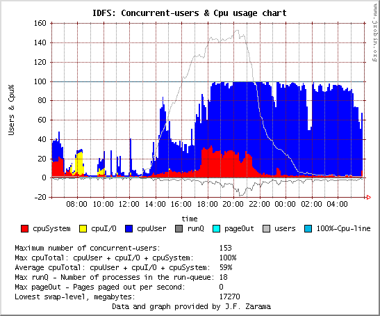
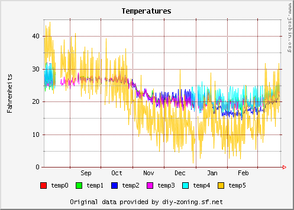

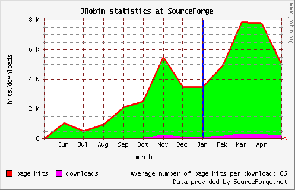
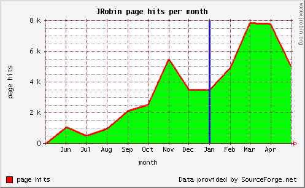
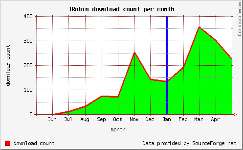
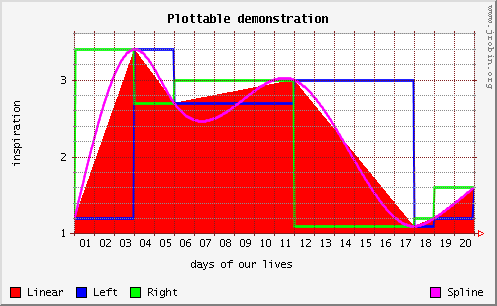

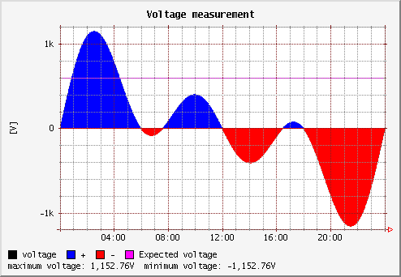
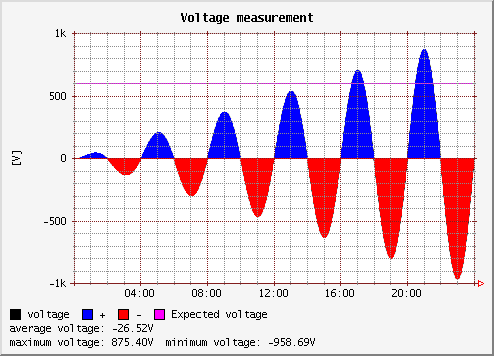
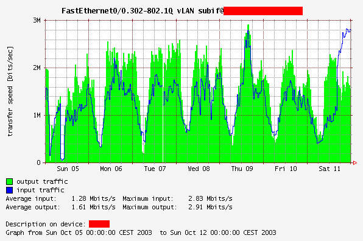
Trick shots
You'll need some experience with JRobin to create these 'fancy' graphs...
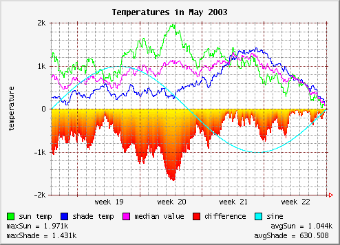
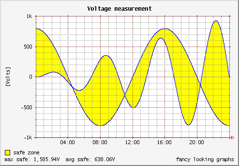
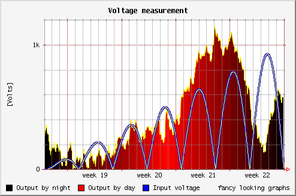
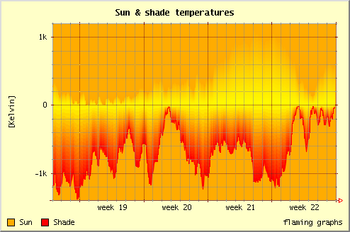
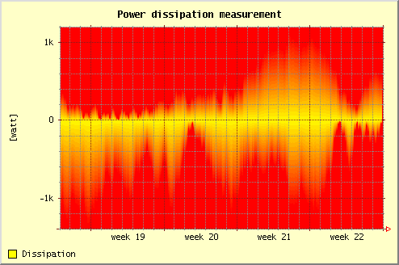
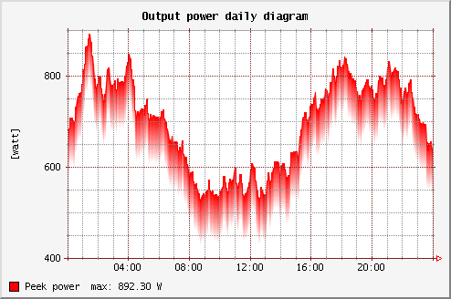
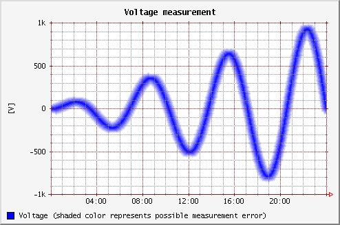
Copyright © 2003, 2004 Sasa Markovic & Arne Vandamme. All Rights Reserved.